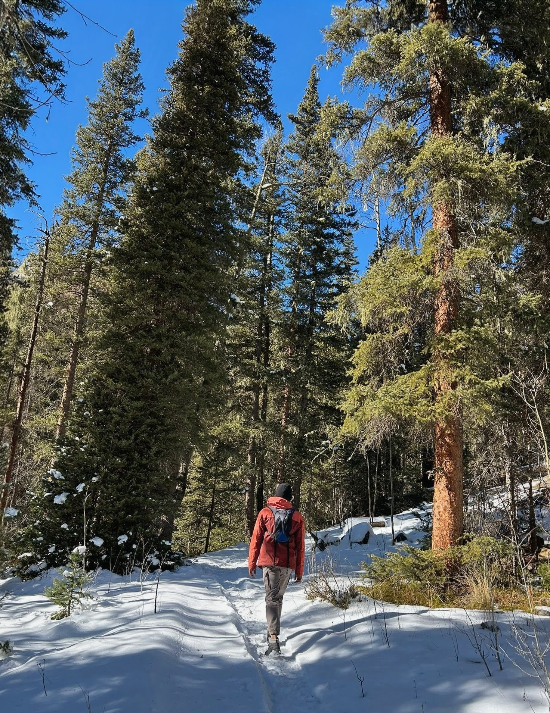
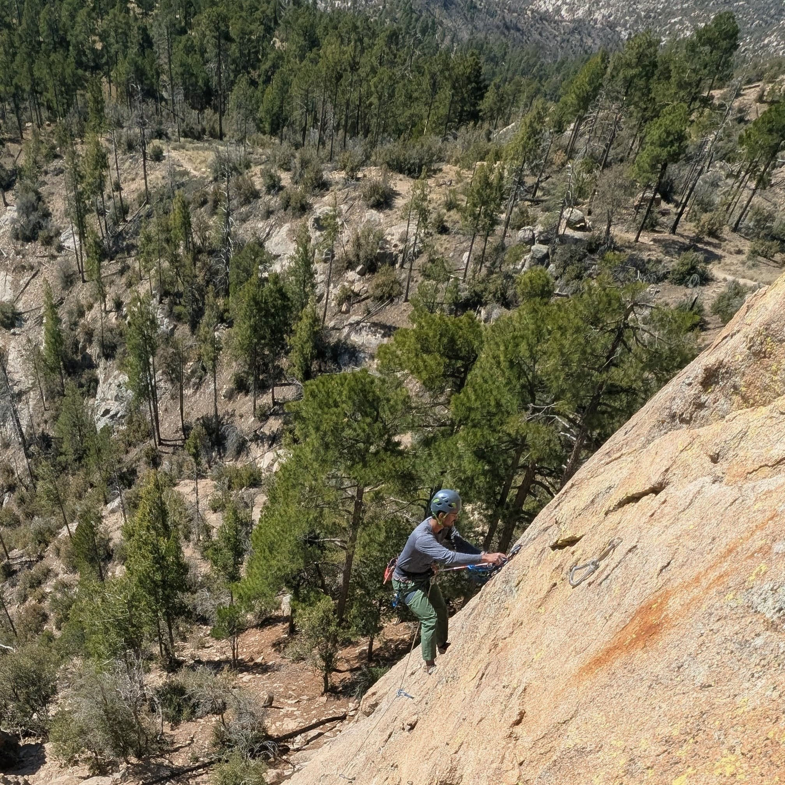
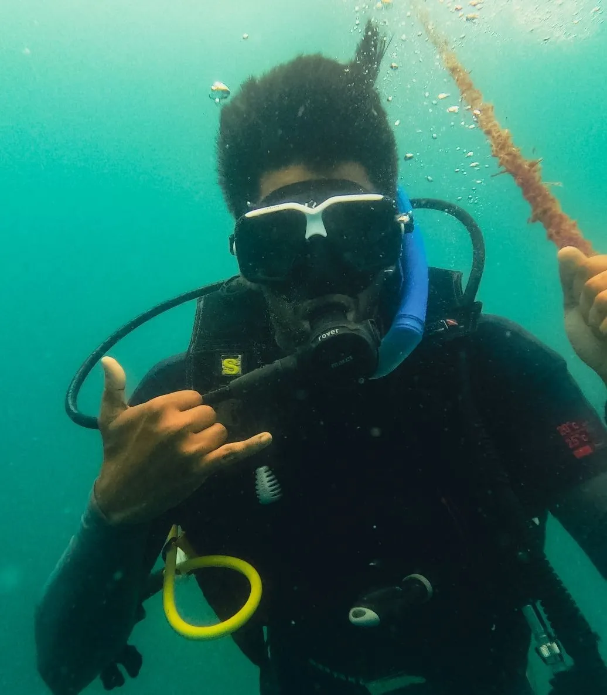

Listen
High above the oceans, so distant and steep,
where the Himalayan skies are heavy and deep.
Fifteen thousand feet up, in a world of its own,
there is a place made of silence and stone.
Here, the mountains will speak,
and the clouds will obey.
As the cold wind washes the echoes away,
there is nothing to conquer
and no race to be won.
Just the crisp, thinning air and the setting sun.
All you have to do is let your racing thoughts fade,
take a deep breath in the freezing cascade,
and listen to the world that nature has made.


Spring
I see him sit there, in that corner every day,
hoping to speak to her, thinking of what to say.
I see the young kids playing on the street,
I see the old couple teasing each other, it’s sweet.
I see men in suits, rushing and co-working,
I see young lovers softly talking.
Through the cafe window, past the morning rush,
I see a bird weaving a nest in the branches.
I see the busy bees searching for early honey.
I see the wind playing with the bright new leaves.
With the warm smell of coffee brewing so near,
the winter is gone,
and the spring has begun.
Hope
Every day,
I see doctors hoping a patient pulls through,
I see students hoping the heavy hours of study will be enough,
I see immigrants hoping the new soil will be kind,
I see mothers in war-torn streets hoping,
for their children,
a quiet sky.
Every day,
I see lovers hoping to reunite at the arrival gate.
I see hopeless romantics still daring to fall in love,
I see artists creating something just to make the world pause,
I see patients hiding an ocean behind a smile,
I see a generation,
trying with heavy hands,
to make the planet safer.
Every day,
I see her hoping for an adventurous life,
I see him hoping for her wishes to come true.
Because everywhere I look,
no matter the struggle, come what may,
hope is the only thing we have,
and
it will always find a way.


The World, Humour, and Irony
In a world where the truth is punished,
we trained our souls to lie.
In a world where emotions are disregarded,
we trained our souls to swallow them whole.
In a world with enough resources for everyone,
we trained our souls to clench their fists in greed.
In a world where peace is essential to survive,
we trained our souls to carry the weight of guns.
In a world where the orphaned are steadily increasing,
we trained our laws to force the birth.
The humor is bleak,
the irony is heavy.
We became the architects of the very things we claim to hate.